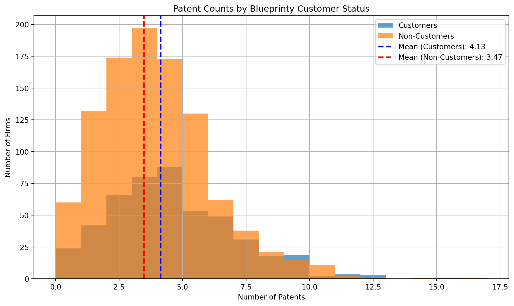
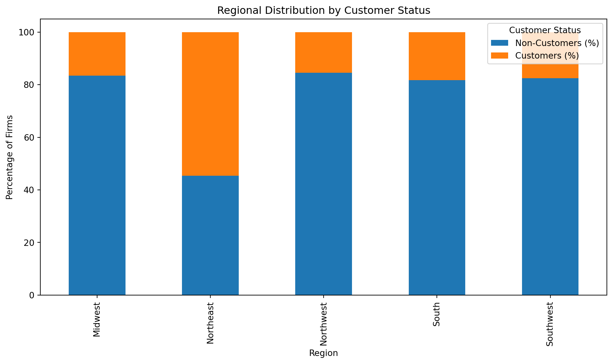
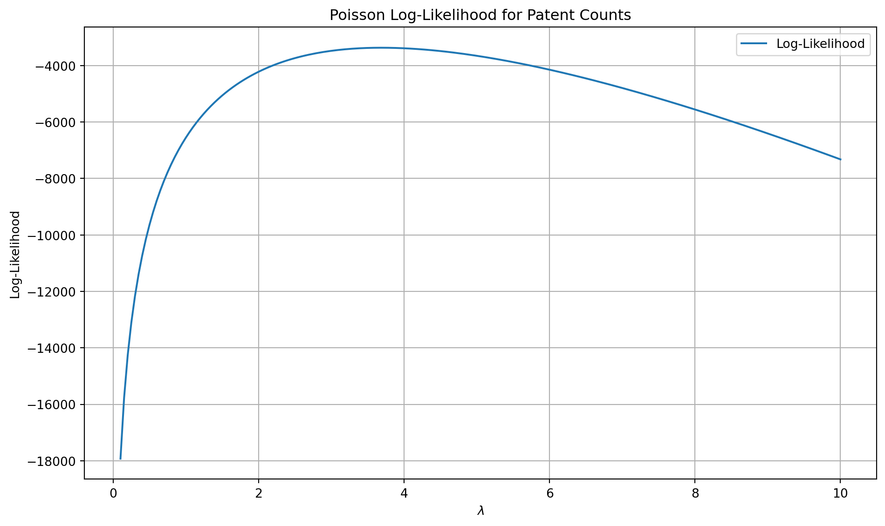
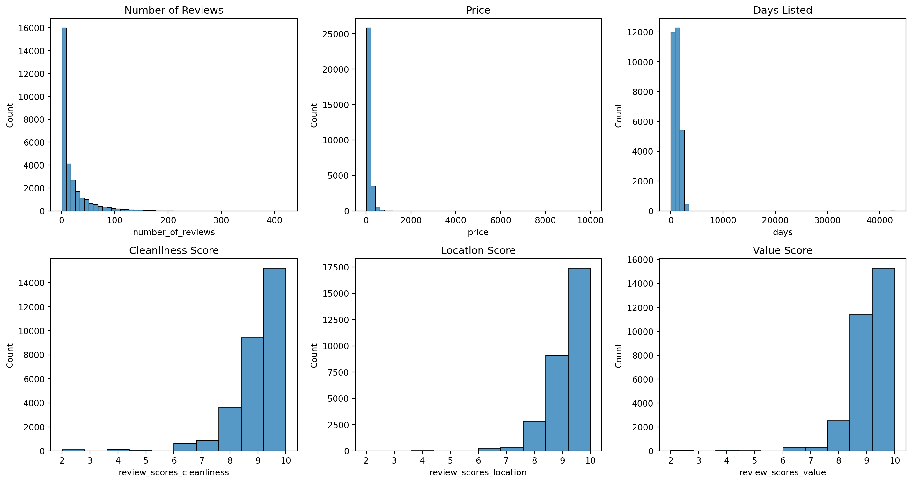
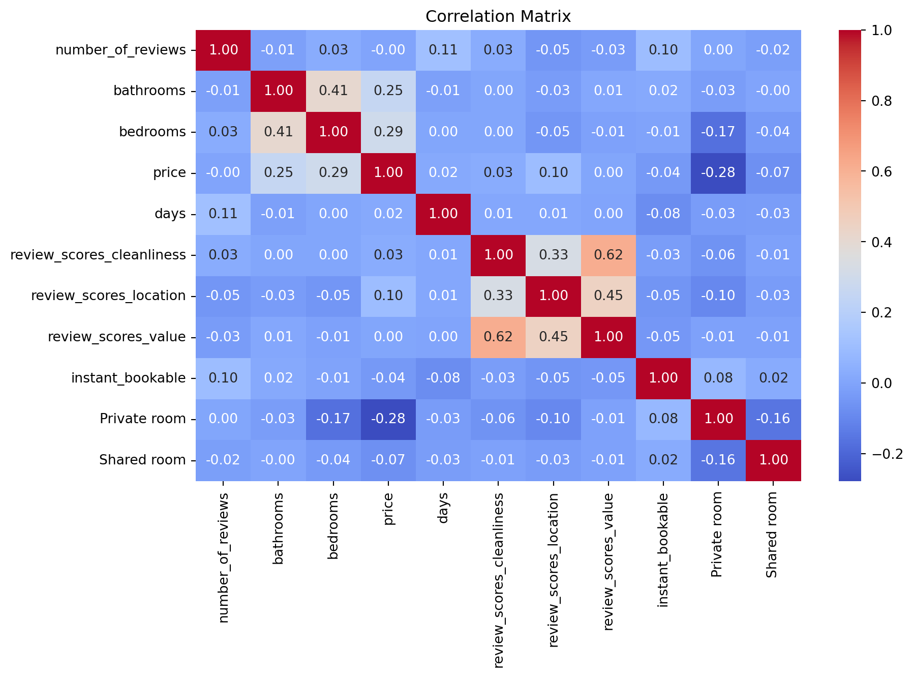

import pandas as pd
df = pd.read_csv('blueprinty.csv')Poisson Regression Examples
Blueprinty Case Study
Introduction
Blueprinty is a small firm that makes software for developing blueprints specifically for submitting patent applications to the US patent office. Their marketing team would like to make the claim that patent applicants using Blueprinty’s software are more successful in getting their patent applications approved. Ideal data to study such an effect might include the success rate of patent applications before using Blueprinty’s software and after using it. Unfortunately, such data is not available.
However, Blueprinty has collected data on 1,500 mature (non-startup) engineering firms. The data include each firm’s number of patents awarded over the last 5 years, regional location, age since incorporation, and whether or not the firm uses Blueprinty’s software. The marketing team would like to use this data to make the claim that firms using Blueprinty’s software are more successful in getting their patent applications approved.
Data
Read in data.
Compare histograms and means of number of patents by customer status. What do we observe?
import matplotlib.pyplot as plt
import seaborn as sns
import numpy as np
import pyrsm as rsm
customers = df[df['iscustomer'] == 1]['patents']
non_customers = df[df['iscustomer'] == 0]['patents']
mean_customers = customers.mean()
mean_non_customers = non_customers.mean()
plt.figure(figsize=(10, 6))
plt.hist(customers, bins=range(0, max(df['patents'])+2), alpha=0.7, label='Customers')
plt.hist(non_customers, bins=range(0, max(df['patents'])+2), alpha=0.7, label='Non-Customers')
plt.axvline(mean_customers, color='blue', linestyle='dashed', linewidth=2, label=f'Mean (Customers): {mean_customers:.2f}')
plt.axvline(mean_non_customers, color='red', linestyle='dashed', linewidth=2, label=f'Mean (Non-Customers): {mean_non_customers:.2f}')
plt.xlabel('Number of Patents')
plt.ylabel('Number of Firms')
plt.title('Patent Counts by Blueprinty Customer Status')
plt.legend()
plt.grid(True)
plt.tight_layout()
plt.show()
The histogram shows that firms using Blueprinty’s software (customers) generally have a higher mean number of patents than non-customers. Specifically:
Customers have a visibly higher mean number of patents.
The distribution for customers is skewed toward higher patent counts compared to non-customers.
Non-customers are more concentrated in the lower patent count range.
This suggests an association between using Blueprinty’s software and having more patents. However, keep in mind this is correlational, not causal—other factors may influence this relationship.
Blueprinty customers are not selected at random. It may be important to account for systematic differences in the age and regional location of customers vs non-customers.
Compare regions and ages by customer status. What do we observe?
region_counts = pd.crosstab(df['region'], df['iscustomer'], normalize='index') * 100
region_counts.columns = ['Non-Customers (%)', 'Customers (%)']
region_counts = region_counts.sort_index()
age_by_customer = df.groupby('iscustomer')['age'].describe()
region_counts.plot(kind='bar', stacked=True, figsize=(10, 6))
plt.title('Regional Distribution by Customer Status')
plt.ylabel('Percentage of Firms')
plt.xlabel('Region')
plt.legend(title='Customer Status')
plt.tight_layout()
plt.show()
age_by_customer
| count | mean | std | min | 25% | 50% | 75% | max | |
|---|---|---|---|---|---|---|---|---|
| iscustomer | ||||||||
| 0 | 1019.0 | 26.101570 | 6.945426 | 9.0 | 21.0 | 25.5 | 31.25 | 47.5 |
| 1 | 481.0 | 26.900208 | 7.814678 | 10.0 | 20.5 | 26.5 | 32.50 | 49.0 |
Regional Differences：
The stacked bar chart shows clear differences in regional distribution between customers and non-customers.
Some regions have a higher proportion of Blueprinty customers, while others have more non-customers.
This suggests that region may be a confounding factor when analyzing patent outcomes.
Age Differences：
Customers have a slightly higher average age (26.9 years) compared to non-customers (26.1 years).
The age distribution is fairly similar, though customers also have a slightly higher standard deviation, indicating more variability in age.
Estimation of Simple Poisson Model
Since our outcome variable of interest can only be small integer values per a set unit of time, we can use a Poisson density to model the number of patents awarded to each engineering firm over the last 5 years. We start by estimating a simple Poisson model via Maximum Likelihood.
Mathematically the likelihood for \(Y \sim \text{Poisson}(\lambda)\). Note that \(f(Y|\lambda) = e^{-\lambda}\lambda^Y/Y!\).
Likelihood for ( Y () )
Note that the probability mass function is given by:
\[ f(Y_i \mid \lambda) = \frac{e^{-\lambda} \lambda^{Y_i}}{Y_i!} \]
For ( n ) independent observations ( Y_1, Y_2, , Y_n ), the likelihood function is:
\[ L(\lambda; Y_1, \dots, Y_n) = \prod_{i=1}^n \frac{e^{-\lambda} \lambda^{Y_i}}{Y_i!} = e^{-n\lambda} \lambda^{\sum_{i=1}^n Y_i} \prod_{i=1}^n \frac{1}{Y_i!} \]
The corresponding log-likelihood is:
\[ \ell(\lambda) = \log L(\lambda) = -n\lambda + \left(\sum_{i=1}^n Y_i\right) \log \lambda - \sum_{i=1}^n \log(Y_i!) \]
The following code defines a log-likelihood function for the Poisson model. It takes a value of 𝜆 and a vector of observed counts 𝑌, and calculates how likely the observed data are under that parameter. This function will later be used for estimating the most likely value of 𝜆 given the data, using maximum likelihood estimation.
from scipy.special import gammaln
def poisson_loglikelihood(lambda_, Y):
if lambda_ <= 0:
return -np.inf
n = len(Y)
sum_Y = np.sum(Y)
log_likelihood = -n * lambda_ + sum_Y * np.log(lambda_) - np.sum(gammaln(Y + 1))
return log_likelihoodThe following code uses the log-likelihood function to plot how the likelihood changes across a range of λ values. It helps visualize which values of λ fit the observed data best by showing where the log-likelihood reaches its peak.
Y = df['patents'].values
lambda_values = np.linspace(0.1, 10, 200)
log_likelihoods = [poisson_loglikelihood(lam, Y) for lam in lambda_values]
plt.figure(figsize=(10, 6))
plt.plot(lambda_values, log_likelihoods, label='Log-Likelihood')
plt.xlabel(r'$\lambda$')
plt.ylabel('Log-Likelihood')
plt.title('Poisson Log-Likelihood for Patent Counts')
plt.grid(True)
plt.legend()
plt.tight_layout()
plt.show()
_ below takes a mathematical approach to find the maximum likelihood estimate (MLE) for λ. By taking the derivative of the log-likelihood, setting it to zero, and solving, we show that the MLE for λ is simply the sample mean of the data. This result aligns with the fact that the Poisson distribution’s mean is equal to 𝜆._
Deriving the MLE for the Poisson Rate Parameter
Recall the log-likelihood function for a Poisson model with observations ( Y_1, , Y_n ):
\[ \ell(\lambda) = -n\lambda + \left( \sum_{i=1}^n Y_i \right) \log \lambda - \sum_{i=1}^n \log(Y_i!) \]
Step 1: Differentiate the log-likelihood
\[ \frac{d\ell}{d\lambda} = -n + \frac{1}{\lambda} \sum_{i=1}^n Y_i \]
Step 2: Set the derivative equal to zero
\[ -n + \frac{1}{\lambda} \sum_{i=1}^n Y_i = 0 \]
\[ \frac{1}{\lambda} \sum_{i=1}^n Y_i = n \]
\[ \sum_{i=1}^n Y_i = n\lambda \]
Step 3: Solve
\[ \hat{\lambda}_{\text{MLE}} = \frac{1}{n} \sum_{i=1}^n Y_i = \bar{Y} \]
Thus, the maximum likelihood estimator for ( ) is the sample mean of the data. This is consistent with the fact that the mean of a Poisson distribution is ( ).
The following code uses a numerical optimizer to find the value of 𝜆 that maximizes the log-likelihood function. This gives us the maximum likelihood estimate (MLE) for 𝜆 based on the observed data.
from scipy.optimize import minimize_scalar
neg_log_likelihood = lambda lambda_: -poisson_loglikelihood(lambda_, Y)
result = minimize_scalar(neg_log_likelihood, bounds=(0.01, 20), method='bounded')
lambda_mle = result.x
lambda_mlenp.float64(3.684666794827123)Estimation of Poisson Regression Model
Next, we extend our simple Poisson model to a Poisson Regression Model such that \(Y_i = \text{Poisson}(\lambda_i)\) where \(\lambda_i = \exp(X_i'\beta)\). The interpretation is that the success rate of patent awards is not constant across all firms (\(\lambda\)) but rather is a function of firm characteristics \(X_i\). Specifically, we will use the covariates age, age squared, region, and whether the firm is a customer of Blueprinty.
The following code updates the log-likelihood function to handle a Poisson regression model with covariates. Instead of using a constant 𝜆,it models 𝜆𝑖 as an exponential function of predictors 𝑋𝑖 and coefficients 𝛽. This allows the expected count to vary based on the characteristics of each observation.
def poisson_loglikelihood(beta, X, Y):
beta = np.asarray(beta)
eta = X @ beta
eta = np.clip(eta, -20, 20)
lam = np.exp(eta)
return np.sum(Y * eta - lam - gammaln(Y + 1))The following code uses numerical optimization to estimate the 𝛽 coefficients in a Poisson regression model with covariates. It sets up the design matrix with an intercept, age, age squared, region dummies, and a customer indicator. After finding the maximum likelihood estimates, it uses the inverse of the Hessian matrix to calculate standard errors and summarizes the results in a table.
from scipy.optimize import minimize
df['age_sq'] = df['age'] ** 2
X_manual = pd.concat([
pd.Series(1, index=df.index, name='intercept'),
df[['age', 'age_sq', 'iscustomer']],
pd.get_dummies(df['region'], drop_first=True)
], axis=1)
X_matrix_manual = X_manual.astype(float).values
Y_vector = df['patents'].values
variable_names_manual = X_manual.columns
def neg_loglikelihood_manual(beta):
return -poisson_loglikelihood(beta, X_matrix_manual, Y_vector)
initial_beta = np.zeros(X_matrix_manual.shape[1])
opt_result_manual = minimize(neg_loglikelihood_manual, initial_beta, method='BFGS')
beta_mle_manual = opt_result_manual.x
hessian_inv_manual = opt_result_manual.hess_inv
standard_errors_manual = np.sqrt(np.diag(hessian_inv_manual))
manual_results_table = pd.DataFrame({
'Coefficient': beta_mle_manual,
'Std. Error': standard_errors_manual
}, index=variable_names_manual)
manual_results_table.round(3)| Coefficient | Std. Error | |
|---|---|---|
| intercept | -0.510 | 0.193 |
| age | 0.149 | 0.014 |
| age_sq | -0.003 | 0.000 |
| iscustomer | 0.208 | 0.033 |
| Northeast | 0.029 | 0.047 |
| Northwest | -0.018 | 0.057 |
| South | 0.057 | 0.056 |
| Southwest | 0.051 | 0.050 |
Check results using Python sm.GLM() function.
import statsmodels.api as sm
from IPython.display import display
df['age_sq'] = df['age'] ** 2
region_dummies = pd.get_dummies(df['region'], drop_first=True)
X = pd.concat([
pd.Series(1, index=df.index, name='intercept'),
df[['age', 'age_sq', 'iscustomer']],
region_dummies
], axis=1).astype(float)
poisson_model = sm.GLM(Y_vector, X, family=sm.families.Poisson())
poisson_results = poisson_model.fit()
glm_summary = poisson_results.summary2().tables[1].round(3)
display(glm_summary)| Coef. | Std.Err. | z | P>|z| | [0.025 | 0.975] | |
|---|---|---|---|---|---|---|
| intercept | -0.509 | 0.183 | -2.778 | 0.005 | -0.868 | -0.150 |
| age | 0.149 | 0.014 | 10.716 | 0.000 | 0.121 | 0.176 |
| age_sq | -0.003 | 0.000 | -11.513 | 0.000 | -0.003 | -0.002 |
| iscustomer | 0.208 | 0.031 | 6.719 | 0.000 | 0.147 | 0.268 |
| Northeast | 0.029 | 0.044 | 0.669 | 0.504 | -0.056 | 0.115 |
| Northwest | -0.018 | 0.054 | -0.327 | 0.744 | -0.123 | 0.088 |
| South | 0.057 | 0.053 | 1.074 | 0.283 | -0.047 | 0.160 |
| Southwest | 0.051 | 0.047 | 1.072 | 0.284 | -0.042 | 0.143 |
Interpret the results.
The Poisson regression results provide insights into how firm characteristics influence the number of patents awarded over a five-year period. The model includes predictors such as firm age, age squared (to capture non-linear effects), regional location, and whether the firm is a customer of Blueprinty.
The coefficient for firm age is positive and statistically significant, suggesting that older firms tend to receive more patents. However, the negative and significant coefficient for age squared indicates diminishing returns to age — the rate at which firms gain patents slows down as they get older. This reflects a concave (inverted-U) relationship: patent activity increases with experience but eventually plateaus or even declines.
Most notably, being a customer of Blueprinty is associated with a higher patent success rate. The coefficient for the customer variable is approximately 0.208, which is statistically significant at conventional levels (p < 0.001). This implies that, holding all else constant, Blueprinty customers are expected to file about 23% more patents than non-customers,exp(0.208)≈1.23. This provides quantitative support for Blueprinty’s marketing claim, although causality cannot be confirmed without randomized data.
Regional effects appear to be minimal. None of the region dummy variables are statistically significant, indicating that once firm age and Blueprinty usage are accounted for, the location of the firm does not have a meaningful impact on patenting success.
In summary, the model suggests that Blueprinty’s software is positively associated with patenting activity, and that firm age plays a strong — but non-linear — role in patent output. Regional differences do not seem to contribute significantly to variation in patent counts among firms in this sample.
The following code estimates the effect of using Blueprinty’s software by comparing predicted patent counts for two scenarios: one where no firm is a customer (X_0), and one where all firms are customers (X_1). By calculating the average difference in predicted patents between these two scenarios, we get a clear, interpretable estimate of the software’s impact on patent success.
X_0 = X.copy()
X_1 = X.copy()
X_0['iscustomer'] = 0
X_1['iscustomer'] = 1
y_pred_0 = poisson_results.predict(X_0)
y_pred_1 = poisson_results.predict(X_1)
diff = y_pred_1 - y_pred_0
average_diff = np.mean(diff)
average_diffnp.float64(0.7927680710452896)The average effect of using Blueprinty’s software, based on the model predictions, is approximately 0.79 additional patents per firm over the 5-year period.
This means that, all else being equal, firms using Blueprinty are predicted to have nearly one more awarded patent on average compared to if they had not used the software. This provides a more intuitive, interpretable measure of Blueprinty’s impact beyond the log-scale regression coefficient.
AirBnB Case Study
Introduction
AirBnB is a popular platform for booking short-term rentals. In March 2017, students Annika Awad, Evan Lebo, and Anna Linden scraped of 40,000 Airbnb listings from New York City. The data include the following variables:
The following code performs an exploratory analysis of Airbnb data, assuming the number of reviews reflects the number of bookings. It begins by cleaning the data, dropping rows with missing values in key variables. Then, it fits a Poisson regression model to examine how listing features—such as price, room type, and review scores—relate to the number of reviews. The resulting model coefficients are used to interpret how each variable influences booking activity.
df_airbnb = pd.read_csv('airbnb.csv')
import matplotlib.pyplot as plt
import seaborn as sns
relevant_cols = [
'number_of_reviews', 'bathrooms', 'bedrooms', 'price', 'days',
'review_scores_cleanliness', 'review_scores_location',
'review_scores_value', 'room_type', 'instant_bookable'
]
df_clean = df_airbnb[relevant_cols].dropna()
df_clean['instant_bookable'] = df_clean['instant_bookable'].map({'t': 1, 'f': 0})
room_dummies = pd.get_dummies(df_clean['room_type'], drop_first=True)
df_clean = df_clean.drop(columns='room_type').join(room_dummies)
summary_stats = df_clean.describe()
fig, axs = plt.subplots(2, 3, figsize=(15, 8))
sns.histplot(df_clean['number_of_reviews'], bins=50, ax=axs[0, 0])
axs[0, 0].set_title('Number of Reviews')
sns.histplot(df_clean['price'], bins=50, ax=axs[0, 1])
axs[0, 1].set_title('Price')
sns.histplot(df_clean['days'], bins=50, ax=axs[0, 2])
axs[0, 2].set_title('Days Listed')
sns.histplot(df_clean['review_scores_cleanliness'], bins=10, ax=axs[1, 0])
axs[1, 0].set_title('Cleanliness Score')
sns.histplot(df_clean['review_scores_location'], bins=10, ax=axs[1, 1])
axs[1, 1].set_title('Location Score')
sns.histplot(df_clean['review_scores_value'], bins=10, ax=axs[1, 2])
axs[1, 2].set_title('Value Score')
plt.tight_layout()
plt.show()
plt.figure(figsize=(10, 6))
sns.heatmap(df_clean.corr(), annot=True, fmt=".2f", cmap='coolwarm')
plt.title("Correlation Matrix")
plt.show()
summary_stats

| number_of_reviews | bathrooms | bedrooms | price | days | review_scores_cleanliness | review_scores_location | review_scores_value | instant_bookable | |
|---|---|---|---|---|---|---|---|---|---|
| count | 30160.000000 | 30160.000000 | 30160.000000 | 30160.000000 | 30160.000000 | 30160.000000 | 30160.000000 | 30160.000000 | 30160.000000 |
| mean | 21.170889 | 1.122132 | 1.151459 | 140.206863 | 1139.711174 | 9.201724 | 9.415351 | 9.333952 | 0.196187 |
| std | 32.007541 | 0.384916 | 0.699010 | 188.392314 | 1252.303675 | 1.114261 | 0.843185 | 0.900472 | 0.397118 |
| min | 1.000000 | 0.000000 | 0.000000 | 10.000000 | 7.000000 | 2.000000 | 2.000000 | 2.000000 | 0.000000 |
| 25% | 3.000000 | 1.000000 | 1.000000 | 70.000000 | 584.000000 | 9.000000 | 9.000000 | 9.000000 | 0.000000 |
| 50% | 8.000000 | 1.000000 | 1.000000 | 103.000000 | 1041.000000 | 10.000000 | 10.000000 | 10.000000 | 0.000000 |
| 75% | 26.000000 | 1.000000 | 1.000000 | 169.000000 | 1592.000000 | 10.000000 | 10.000000 | 10.000000 | 0.000000 |
| max | 421.000000 | 6.000000 | 10.000000 | 10000.000000 | 42828.000000 | 10.000000 | 10.000000 | 10.000000 | 1.000000 |
Distribution Insights:
Number of reviews is heavily right-skewed (most listings have few reviews, a few have hundreds).
Price has extreme outliers (max is $10,000), suggesting need for potential log transformation in future models.
Review scores (cleanliness, location, value) are clustered near the top (mostly 8–10).
Days listed ranges widely, up to ~42,000 days — possibly inflated by scrape or listing errors.
Correlations (with number of reviews):
days listed and instant_bookable show slight positive correlations (~0.1).
price, room_type, and review scores are weakly correlated with review count.
Stronger predictors likely interact or relate non-linearly, which a regression model can explore better.
import statsmodels.api as sm
from IPython.display import display
X_model = df_clean.drop(columns='number_of_reviews')
X_model = pd.get_dummies(X_model, drop_first=True).astype(float)
X_model = sm.add_constant(X_model)
y_model = df_clean['number_of_reviews']
poisson_model = sm.GLM(y_model, X_model, family=sm.families.Poisson())
poisson_results = poisson_model.fit()
poisson_summary = poisson_results.summary2().tables[1].round(3)
display(poisson_summary)| Coef. | Std.Err. | z | P>|z| | [0.025 | 0.975] | |
|---|---|---|---|---|---|---|
| const | 3.498 | 0.016 | 217.396 | 0.000 | 3.467 | 3.530 |
| bathrooms | -0.118 | 0.004 | -31.394 | 0.000 | -0.125 | -0.110 |
| bedrooms | 0.074 | 0.002 | 37.197 | 0.000 | 0.070 | 0.078 |
| price | -0.000 | 0.000 | -2.151 | 0.031 | -0.000 | -0.000 |
| days | 0.000 | 0.000 | 129.755 | 0.000 | 0.000 | 0.000 |
| review_scores_cleanliness | 0.113 | 0.001 | 75.611 | 0.000 | 0.110 | 0.116 |
| review_scores_location | -0.077 | 0.002 | -47.796 | 0.000 | -0.080 | -0.074 |
| review_scores_value | -0.091 | 0.002 | -50.490 | 0.000 | -0.095 | -0.088 |
| instant_bookable | 0.346 | 0.003 | 119.666 | 0.000 | 0.340 | 0.352 |
| Private room | -0.011 | 0.003 | -3.847 | 0.000 | -0.016 | -0.005 |
| Shared room | -0.246 | 0.009 | -28.578 | 0.000 | -0.263 | -0.229 |
Interpretation:
Listings with more bedrooms and longer availability (days) tend to receive more reviews.
The negative coefficient on bathrooms may reflect quirks in listing types (e.g., luxury places with fewer stays).
Price has a very small but statistically significant negative effect — likely due to higher prices deterring short-term bookings.